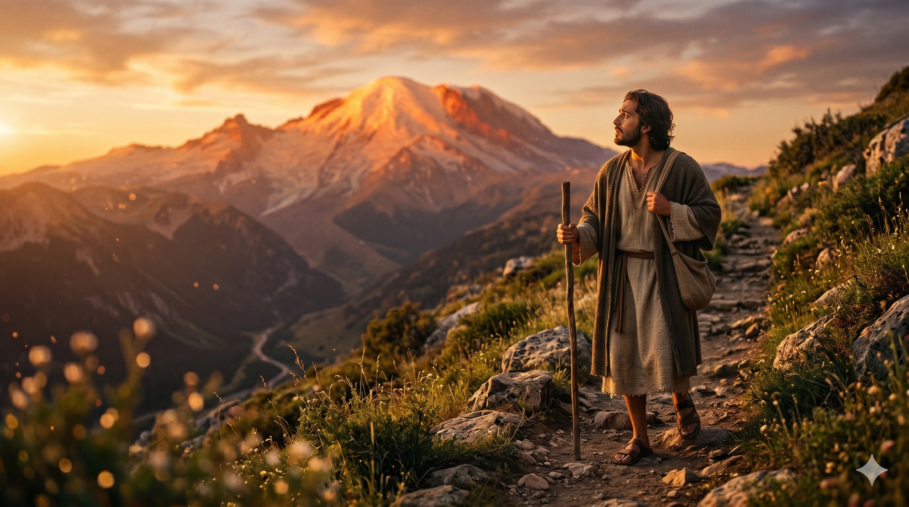

높은 산 위에서 변형되신 예수님의 눈부신 영광 앞에 엎드린 베드로·야고보·요한, 하늘에서 빛이 쏟아지고 모세와 엘리야의 형상이 빛 속에 서 있다.
엿새 후에 예수께서 베드로와 야고보와 그 형제 요한을 데리시고 따로 높은 산에 올라가셨더니 그들 앞에서 변형되사 그 얼굴이 해 같이 빛나며 옷이 빛과 같이 희어졌더라. 그 때에 모세와 엘리야가 예수와 더불어 말하는 것이 그들에게 보이거늘. — 마태복음 17:1-3
예수께서 가이사랴 빌립보에서 당신이 그리스도이심을 제자들에게 처음 밝히시고, 십자가의 길을 예고하신 지 엿새 후의 일입니다. 주님은 베드로와 야고보와 요한을 따로 데리시고 높은 산에 오르셨습니다. 그리고 그들 앞에서 변형되셨습니다 — 얼굴이 해 같이 빛나고, 옷이 빛과 같이 희어지며, 모세와 엘리야가 함께 나타나 예수와 이야기를 나눴습니다. 구름 속에서 하나님의 음성이 들렸습니다: "이는 내 사랑하는 아들이요 내 기뻐하는 자니 너희는 그의 말을 들으라." 세 제자는 땅에 엎드려 심히 두려워했습니다.
요한은 이 순간을 평생 간직했습니다. 훗날 그는 요한복음 서두에 "우리가 그의 영광을 보니 아버지의 독생자의 영광이요"(요 1:14)라고 기록하는데, 그 '봄'의 뿌리가 바로 이 변화산 체험에 있었습니다. 또한 베드로후서 1:16-18에서 베드로도 이 산의 사건을 언급하며 "우리는 그 위엄을 친히 본 자"라고 증언합니다. 변화산은 십자가와 부활로 가는 길목에서 제자들에게 잠깐 열려진 하늘의 창이었습니다. 어둠 속으로 내려가기 전에 먼저 영광을 보게 하신 주님의 배려였습니다.

산에서 내려오는 길, 요한이 뒤를 돌아보며 방금 목격한 영광을 마음에 새기는 모습, 멀리 산 위에는 아직 빛이 남아 있다.
하나님은 때로 우리를 어둠 속으로 부르시기 전에 먼저 산 위의 영광을 보여 주십니다. 요한은 변화산에서 예수님의 진짜 정체성을 두 눈으로 보았습니다. 이 체험은 그가 이후 수십 년간 박해와 유배를 견디며 복음을 전할 수 있었던 내면의 기둥이 되었습니다. 우리도 신앙의 여정에서 특별한 은혜의 순간들을 경험합니다 — 기도 중에 분명하게 임하시는 하나님의 임재, 말씀이 살아 움직이는 것 같은 순간들. 그 순간들을 함부로 흘려보내지 마십시오.
변화산의 영광은 오래 머물 수 있는 곳이 아니었습니다. 주님은 곧 제자들을 산 아래 고통의 현실로 데려가셨습니다. 그러나 그 짧은 영광의 체험이 요한의 마음에 평생 지워지지 않는 확신을 심었습니다 — "예수는 진짜입니다." 우리가 산 정상에서 본 것을 기억하고 있다면, 계곡에서도 흔들리지 않을 수 있습니다. 은혜의 순간을 마음에 새기고, 어두운 때에 그것을 꺼내 드십시오.
당신이 하나님께 받은 산 위의 체험을 기억하십시오.
그것이 계곡의 어둠을 통과하는 빛입니다.
요한이 평생 "우리가 그 영광을 보았다"고 고백했듯이 — 당신도 그렇게 고백하는 사람이 되십시오.